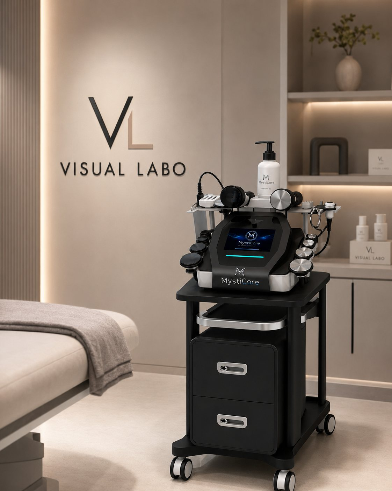
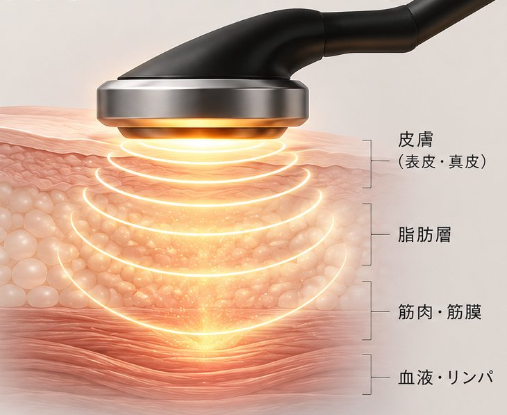
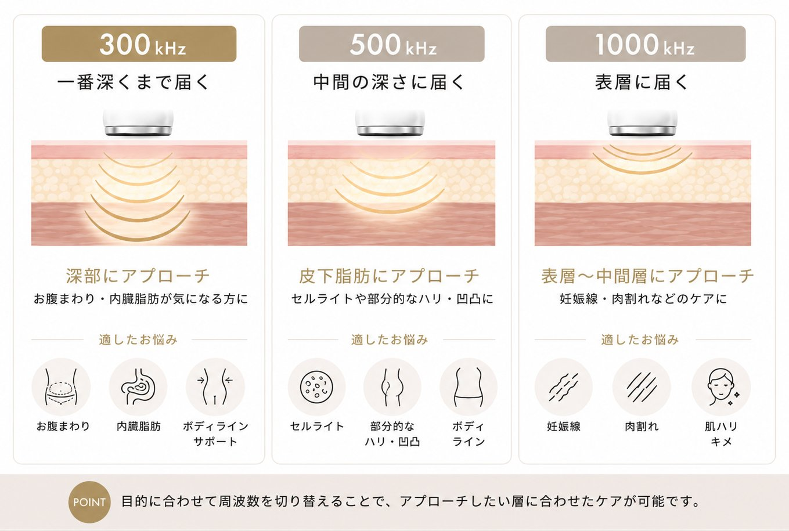
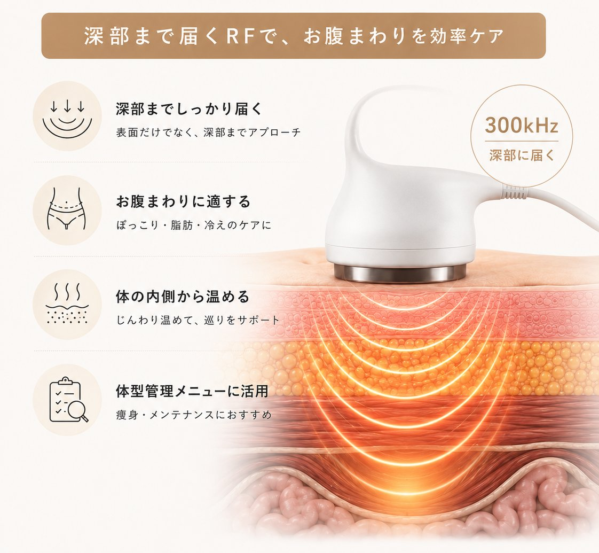
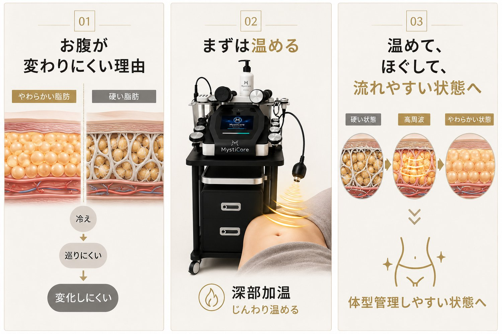
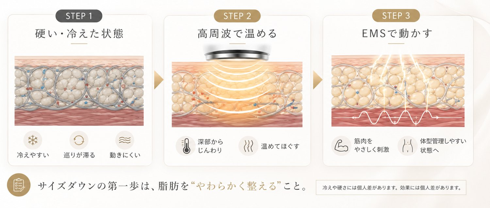
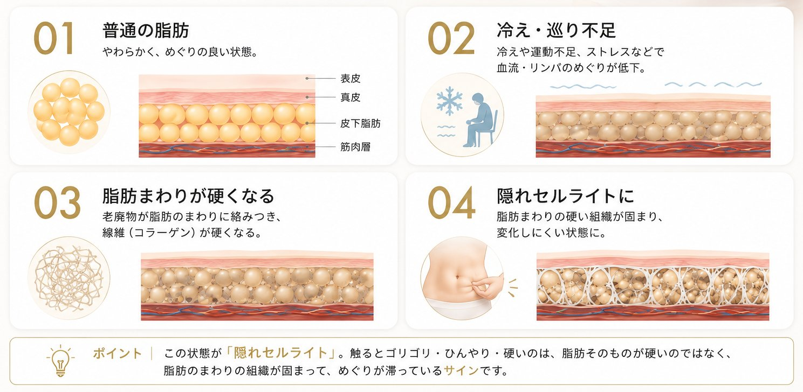
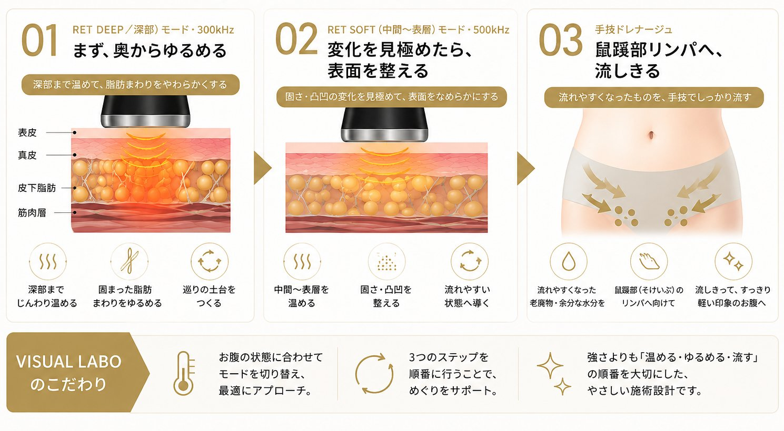

高周波が、体型管理に向く理由を。
高周波（RF＝ラジオ波）とは、1秒間に数十万回以上振動する電気の波。この振動が体の組織に伝わると、分子同士が摩擦を起こして熱が生まれます。カイロやお風呂のように外から温めるのではなく、体の内側から温まるのが、最大の特長です。
熱は、電気抵抗の高い組織ほど生まれやすい性質があります。なかでも脂肪層は抵抗が高く、もっとも熱を持ちやすい層。だからこそ高周波は、お腹まわりなどの体型管理のアプローチに向いています。

組織別の電気抵抗と、熱の生まれやすさ。脂肪層がもっとも熱を持ちやすい。
高周波には「周波数が低いほど、深く届く」という性質があります。MystiCore®は複数の周波数（300・448・500・1000kHz）を使い分け、表層から深部まで状態に合わせてアプローチします。

多くの温熱機器が届きにくい「深い層」。MystiCore®の300kHzは、低い周波数だからこそ体の奥まで到達し、内臓脂肪のある深部や深層筋までアプローチします。表面だけでなく、芯から温めて整えたい——そんなお腹まわり・ウエストの体型管理にこそ向いた周波数です。

お腹や腰、二の腕を触ると、
ゴリゴリ・ひんやり硬い——。
それは脂肪そのものが硬いのではなく、冷えやめぐりの滞りで、脂肪のまわりの組織が固まっている状態といわれています。お風呂や手の熱では奥まで届きにくく、強く揉みすぎるのは負担に。だから、まず温めてゆるめることが大切です。

だから、サイズダウンはまず“やわらかく整える”ことから。
高周波で深部から温めてゆるめ、
ゆるんでからEMSで動かすので、
効率よくアプローチできます。

※ 体型管理・コンディショニングを目的とした施術です。医療行為ではなく、感じ方には個人差があります。
セルライトと聞くと、太ももやお尻の凸凹をイメージしがち。でも実は、お腹にもセルライトは潜んでいます。冷えや血行不良で脂肪のまわりに老廃物が絡みつき、お腹の奥で固まった「隠れセルライト」。食事や運動だけではお腹が変わりにくい、ひとつの理由です。
ひとつでも当てはまったら、奥にひそむ「隠れセルライト」のサインかもしれません。

温めて、ほぐして、流れやすい状態へ。
この一連の流れをひとつのマシンでできるのが、MystiCore®の高周波施術。
自己流のケアでは届かない「お腹の奥」こそ、VISUAL LABOへ。
※ 体型管理を目的とした施術であり、医療行為ではありません。感じ方・変化には個人差があります。
VISUAL LABOの高周波施術は、お腹の状態に合わせてモードを切り替え、最後は手技で流しきる。3つのステップで整えます。順番に、意味があります。

ただ機械をあてるだけでは、ありません。
スタッフがお腹に触れ、固さや凹凸の変化を指先で確かめながら、切り替えのタイミングを見極める。
機械のパワーと、人の手の感覚。ふたつをあわせるのが、VISUAL LABOの施術です。
※ 体型管理を目的とした施術であり、医療行為ではありません。感じ方・変化には個人差があります。